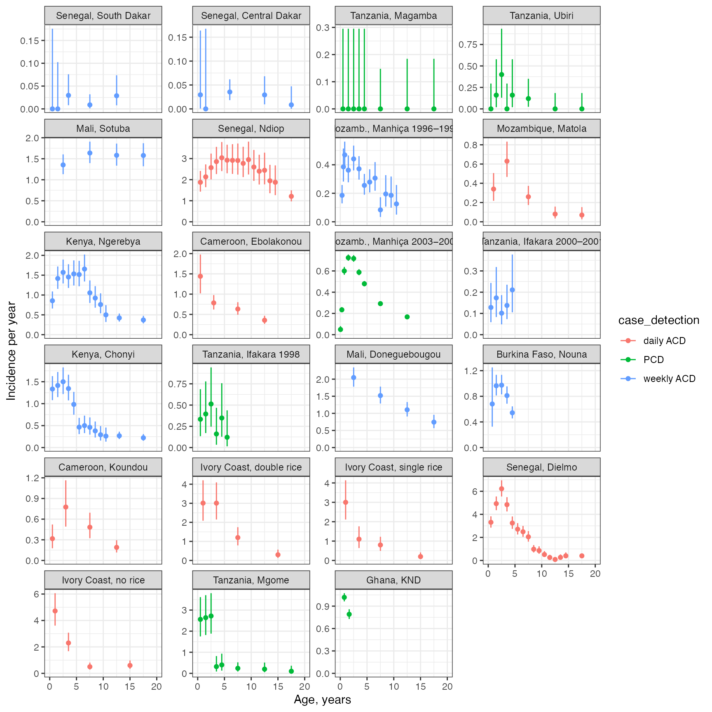
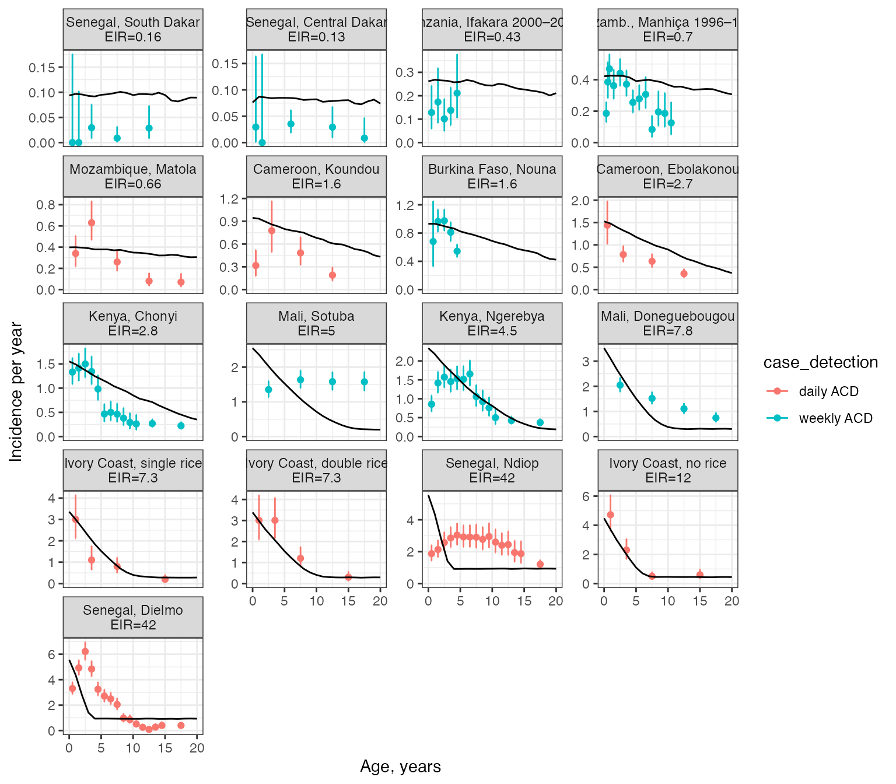

vignettes/calibration_age_inc.Rmd
calibration_age_inc.RmdThis report aims to:
The data used here come from an analysis by Griffin et al. (2014) looking at the changing age-burden of P. falciparum malaria disease in sub-Saharan Africa - see here for further information on this dataset. The data giv both prevalence and incidence data over 23 distinct sites. We will focus on incidence data, and will begin by plotting confidence intervals on the raw data:
# get CIs on raw incidence data
df_data <- prev_inc_griffin2014 %>%
dplyr::filter(type == "incidence") %>%
mutate(inc = numer / denom,
lower = CI_inc(numer, denom)$lower,
upper = CI_inc(numer, denom)$upper,
age_mid = (age0 + age1) / 2) %>%
dplyr::filter(age_mid < 20)
# plot data
df_data %>%
mutate(plot_title = factor(plot_title, levels = unique(plot_title))) %>% # set order
ggplot() + theme_bw() +
geom_hline(yintercept = 0, alpha = 0) + # force y-axis range to start at 0
geom_errorbar(aes(x = age_mid, ymin = lower, ymax = upper, color = case_detection)) +
geom_point(aes(x = age_mid, y = inc, color = case_detection)) +
xlim(c(0, 20)) + xlab("Age, years") + ylab("Incidence per year") +
facet_wrap(~plot_title, ncol = 4, scales = "free_y")
These panels are in order of increasing transmission intensity, as measured in the original publication. We can see that most cases are concenrated in children, and we can see hints that cases are concentrated in younger children as transmission intensity increases, however, there is also significant variation around this pattern.
When comparing against model output, we will restrict our attention to active case detection only. The model output shown below was obtained by manually choosing a distinct mosquito density (and implied EIR) for each site that best matched the data. The resulting EIRs are given in the title for each site.
# load precomputed model output
# code to produce this output: R_ignore/calibration/calibration_age_inc1.R
model_output <- readRDS("../inst/extdata/calibration_age_inc1.rds")
# subset data to ACD only, use title containing EIR and plot against model output
df_data %>%
dplyr::filter(case_detection != "PCD") %>%
left_join(model_output$df_order) %>%
ggplot() + theme_bw() +
geom_hline(yintercept = 0, alpha = 0) + # force y-axis range to start at 0
geom_errorbar(aes(x = age_mid, ymin = lower, ymax = upper, color = case_detection)) +
geom_point(aes(x = age_mid, y = inc, color = case_detection)) +
xlim(c(0, 20)) + xlab("Age, years") + ylab("Incidence per year") +
facet_wrap(~plot_title_EIR, ncol = 4, scales = "free_y") +
geom_line(aes(x = age_min, y = inc), linewidth = 0.5, data = model_output$df_sim)## Joining, by = "plot_title"## Warning: Removed 29 rows containing missing values (`geom_line()`).
We can see that the model captures some of the rough trends in the data - that cases are concentrated in children and this becomes more intense at high transmission - but otherwise the model fails to match the data well in all sites. There are some sites where incidence appears to increase over the first years of life, which is not captured by the model and may imply that we need an additional age-dependent form of immunity in the model (e.g. maternally derived immunity). There are also some moderate-high transmission sites where the model is not able to capture the observed wide spread over ages (e.g. Senegal, Ndiop). This may be due to additional site-specific effects that are currently not being captured. For example, in the original publication these sites were fitted using a random-effects framework, which gives more flexibility to account for observation effects.